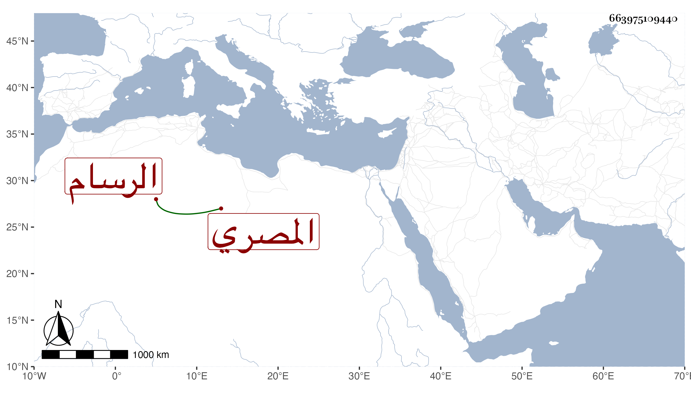

0902Sakhawi.DawLamic.ITO20230111-ara1.EIS1600.663975109440
Biography ID: 663975109440
136
أحمد بن علي المصري الرسام . ولد بعد الخمسين وسبعمائة وتعانى صناعة الرسم وتعاطى النظم مع عامية شديدة ولكنه كان سهلا عليه وله نوادر لطيفة . قاله شيخنا في معجمه سمعت من نظمه وأنا شاب وكان عند إنشائه الشعر كأنه يتكلم لعدم تكلفه لذلك . مات في ثالث ربيع الأول سنة سبع عشرة ، وعنوان نظمه في ابن خلدون لما عزل من أبيات :
| تداعت روحه للقدس لما | عزل يوما بأنفاس الخليل |
وممن ذكره باختصار المقريزي في عقوده .
